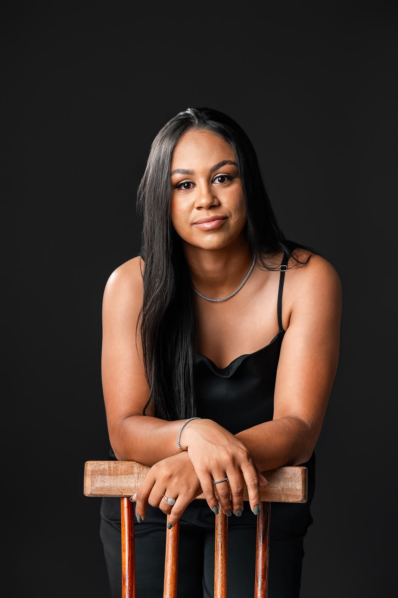

Uma alimentação equilibrada para uma vida mais leve.
Acompanhamento nutricional individualizado e humano, pensado para caber na sua rotina real — sem dietas extremas e sem abrir mão do prazer de comer bem.

Olá, eu sou Anny Beatriz
Sou nutricionista e acredito que alimentação vai muito além do prato: é uma forma de cuidar do corpo, da mente e da qualidade de vida. Meu trabalho é ajudar cada pessoa a construir uma relação mais saudável com a comida, respeitando sua rotina, seus objetivos e sua individualidade.
Acredito em orientar sem impor, mostrando que é possível alcançar saúde e bem-estar sem abrir mão do prazer de viver.
"É possível cuidar da saúde sem abrir mão do prazer de viver."
Nutrição além do prato.
Cada pessoa tem uma rotina, uma história e objetivos diferentes — por isso o cuidado nutricional precisa ser individualizado e possível de aplicar na vida real.
Individualidade
Um acompanhamento pensado para você, sua rotina e seus objetivos.
Equilíbrio
Uma relação mais saudável com a comida, sem extremismos.
Saúde e bem-estar
Cuidar da alimentação para melhorar a qualidade de vida de forma integral.
Acompanhamento
Orientação e suporte durante toda a jornada de transformação.
Um cuidado feito para a sua vida real.
Reeducação alimentar
Reconstruir sua relação com a comida de forma leve e gradual.
Emagrecimento saudável
Perder peso com equilíbrio, sem dietas restritivas.
Qualidade de vida
Mais energia, disposição e bem-estar no dia a dia.
Alimentação equilibrada
Um plano possível de aplicar na sua rotina, com escolhas conscientes.
Mudança de hábitos
Pequenas transformações que constroem grandes resultados.
Acompanhamento individualizado
Suporte próximo e contínuo, respeitando seu momento.
Sua transformação começa com pequenas escolhas feitas todos os dias.
Quero começar minha transformaçãoUm caminho simples, pensado para você.
Conheça
Vamos conversar sobre sua rotina, seus objetivos e sua relação com a alimentação.
Personalize
Juntos, construímos uma estratégia nutricional que faça sentido para sua realidade.
Transforme
Você recebe acompanhamento contínuo para desenvolver hábitos sustentáveis.
Vamos construir essa transformação juntos?
Dê o primeiro passo para uma relação mais leve e equilibrada com a alimentação.